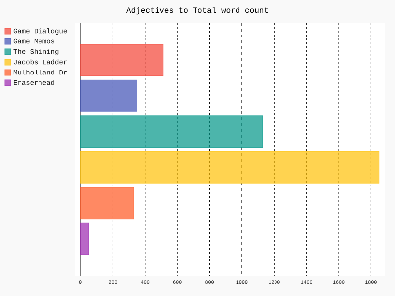
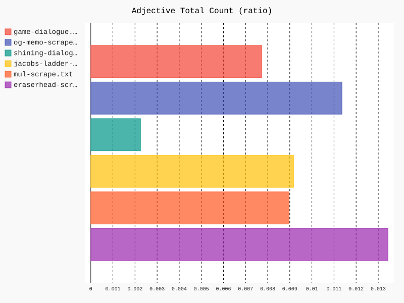

Research and Results:
By Ella G. and Jack N.
Project Description:
This is a website dedicated to exploring how other forms of media and art have influenced the style, design, story, and general themes of Silent Hill 2 through an in-depth analysis and comparison of the text in Silent Hill 2
Points of Interest
Silent Hill 2 draws from a wide array of sources for inspiration. From renowned filmmakers like David Lynch, David Cronenberg, and Adrian Lyne to literary giants such as Adrian Lyne and Stephen King, there is a wealth of meaning buried in this game, just waiting.
Chosen Inspiration from Silent Hill 2:


A Visualization of Adjectives
Why Adjectives?
Silent Hill 2 thrives on its destitute environments, mysterious fog, and grotesque creatures. We hoped that through the description of such environments that we might glean some interesting connections while also painting a kind of "analytical portrait". By examining outlying clusters in the graph below, it is not just a web you're looking at. The clustered connections become their own descriptors.
Adjective Network:
Take note of which clusters lie between which sources: how unique are the featured words? Are there any connections that come as a surprise?
Adjective Count


The first visual, as described, is an objective visualization of the adjective count in each file; however, it's not exactly a good representation of how descriptive each text is. All it proves is that a longer movie will have more words (duh). Only until after we divided each count by their total could we get an accurate comparison of how often each inspiration used adjectives. As you can see, although "Game Memos" is grossly lacking in the first graph, the second graph shows us that--for the length of the work--it has an unusually large amount of adjectives (likely because it's environmental text).